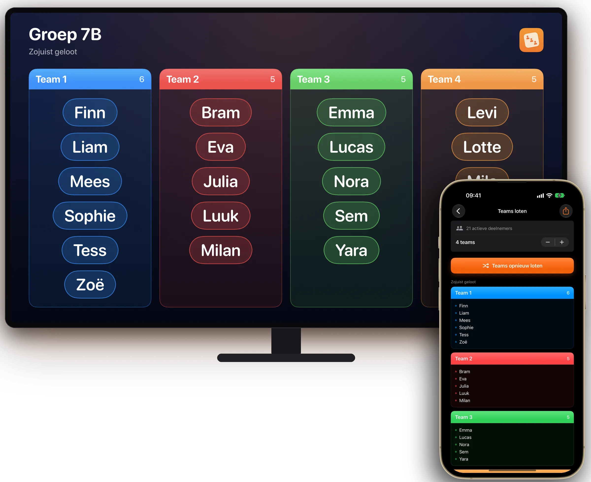
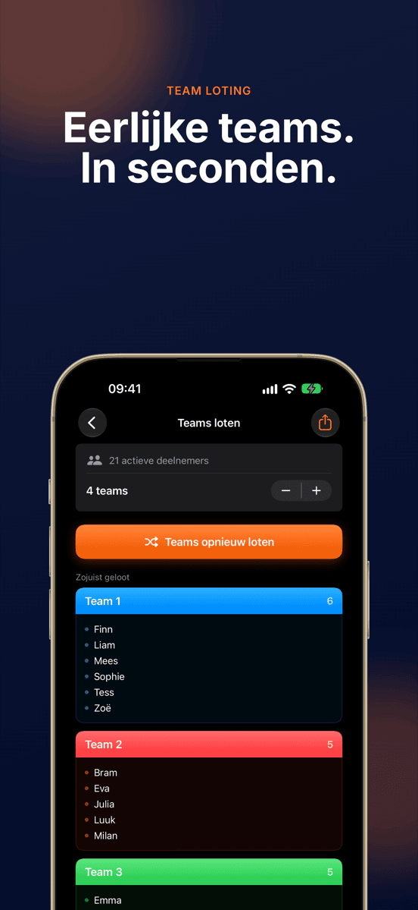
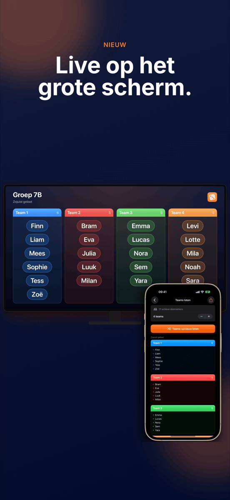
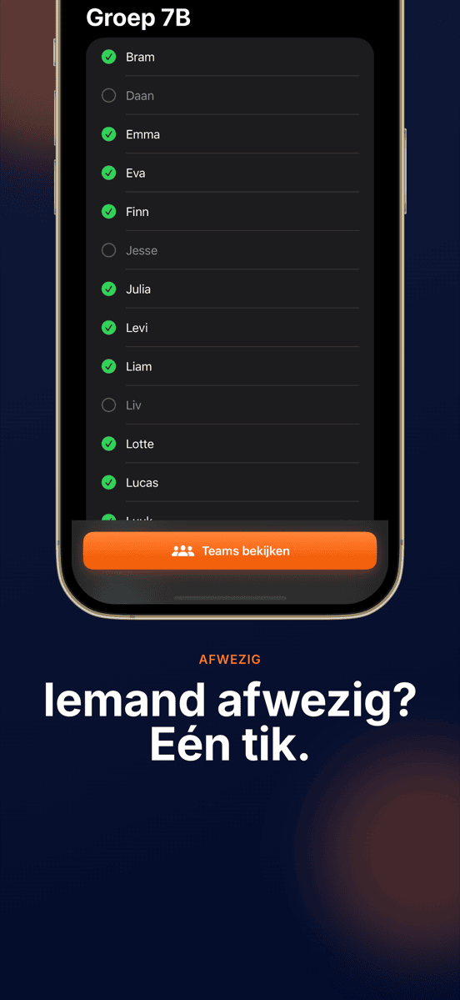
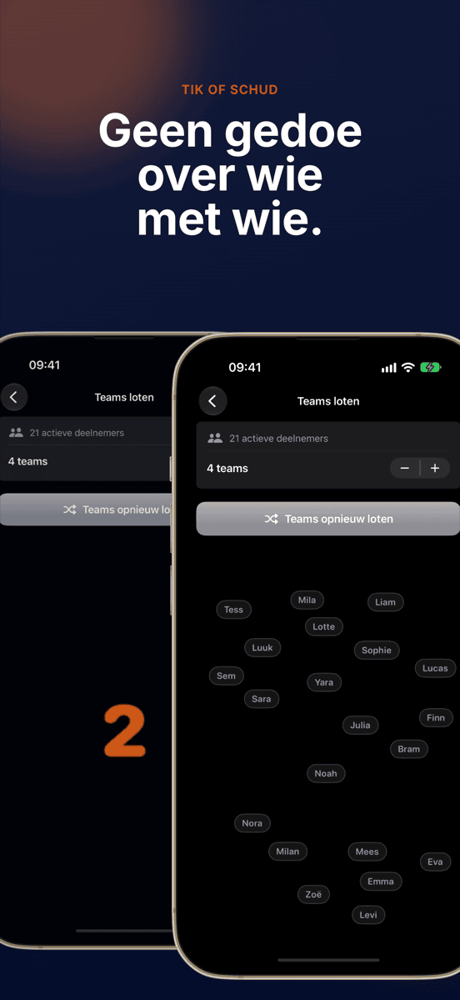
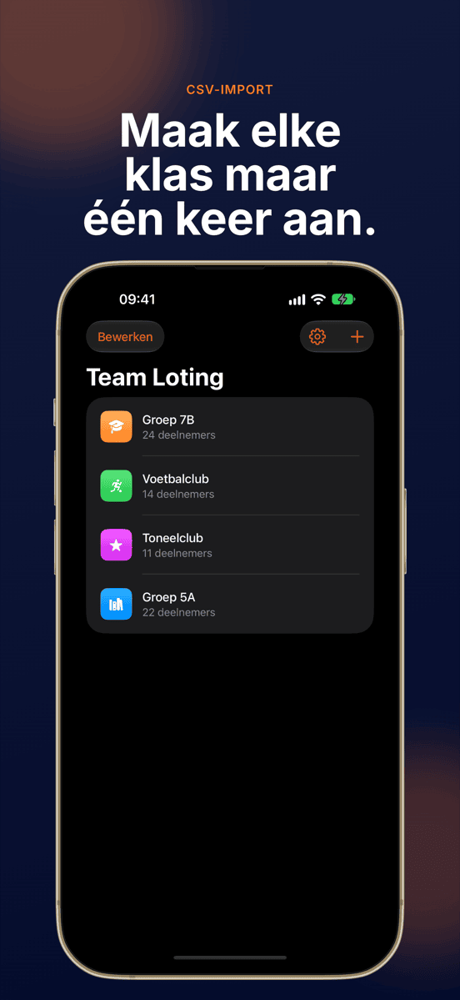
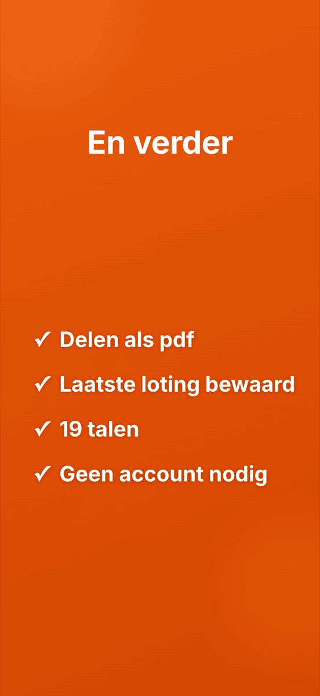

NIEUWLive op het grote scherm
Team Loting
Eerlijke teams. In seconden.







Teams zonder gedoe.
Live op het grote scherm
Via AirPlay of kabel ziet de hele klas hoe de teams ontstaan.
Eén tik, klaar
Iedereen wordt willekeurig en gelijk over de teams verdeeld.
Groepen blijven bewaard
Maak een klas, team of club één keer aan en loot zo vaak je wilt. Elke groep bewaart de laatste loting.
Afwezig? Doet niet mee
Vink afwezigen met één tik uit, de loting slaat ze over.
Aantal teams naar keuze
Tweetallen, drietallen, viertallen of grotere teams.
Zichtbaar geschud
Een animatie schudt alle namen zichtbaar door elkaar. Schudden met het apparaat start een nieuwe ronde.
Zo eenvoudig gaat het.
Groep aanmaken
Namen intypen of een CSV importeren.
Afwezigen uitvinken
Eén tik per naam die vandaag ontbreekt.
Loten
Aantal teams kiezen, tikken, kijken.
Laten zien
Op de beamer of als pdf.
Gids
Veelgestelde vragen
Hoe verdeel ik een groep willekeurig in teams?
Maak je groep één keer aan in Team Loting, voeg de deelnemers toe en start de loting. De app verdeelt iedereen willekeurig en gelijk over het gekozen aantal teams.
Voor wie is Team Loting?
Voor iedereen die regelmatig teams maakt: leraren, trainers, workshopleiders, verenigingen en organisatoren van evenementen.
Kan ik het aantal teams zelf kiezen?
Ja. Jij kiest hoeveel teams, van tweetallen tot grote teams, en Team Loting verdeelt de deelnemers gelijkmatig.
Worden mijn gegevens opgeslagen of verstuurd?
Alle groepen en namen blijven alleen op je apparaat. Er gaan geen gegevens naar een server.
Kan ik namenlijsten uit Excel importeren?
Ja. Exporteer de lijst als CSV uit Excel of Google Sheets en importeer hem in Team Loting. De hele klas staat er in een paar seconden in.
Kan ik de loting op de beamer laten zien?
Ja. Is je iPhone of iPad via AirPlay of kabel verbonden met een beamer, Apple TV of monitor, dan toont Team Loting de loting daar live en liggend. Je bedient de app gewoon op je apparaat.
Wat kost Team Loting?
Downloaden en de eerste loting zijn gratis. Voor volgende lotingen heb je het Pro-abonnement nodig, per maand of per jaar, dat je eerst gratis kunt uitproberen. Team Loting werkt op iPhone en iPad vanaf iOS 17.